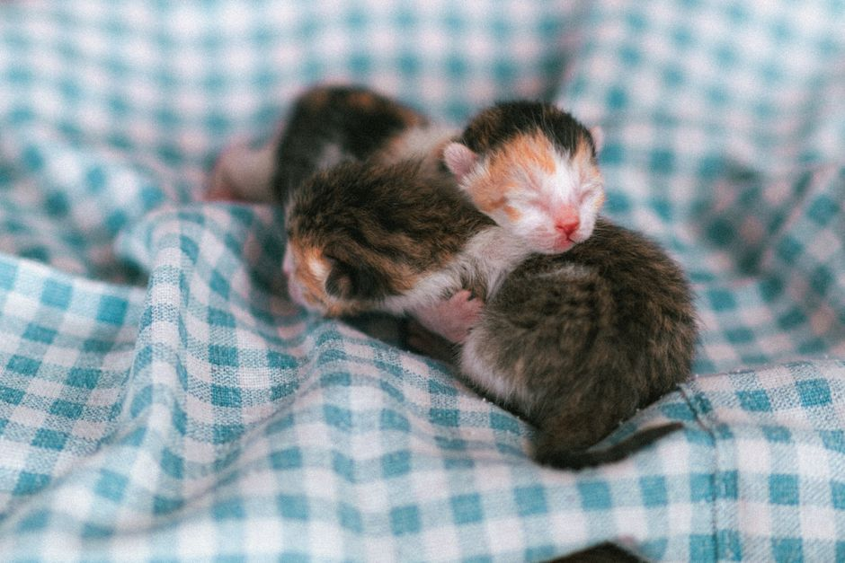

Cómo preparar tu hogar para la llegada de tu nuevo perro o gato

Photo: Duy Nod / Pexels
Preparar la casa antes de la llegada de tu perro o gato evita peligros y hace más tranquilos los primeros días. Esta es una lista sencilla, para hacer en orden.
1. Haz la casa segura
- guarda fuera de su alcance los medicamentos, los productos de limpieza, el chocolate y los objetos pequeños que podría tragar;
- cierra los cubos de basura y sujeta o esconde los cables eléctricos;
- comprueba que las ventanas y los balcones son seguros, con una red o mosquitera resistente;
- retira o aleja las plantas tóxicas: pide a tu veterinario la lista de plantas peligrosas, por ejemplo los lirios para los gatos.
2. Prepara un rincón para él
Instala una cama o un transportín con una manta en un lugar tranquilo, apartado del paso. Los primeros días será su base de descanso y seguridad.
3. Compra lo básico
- comedero y bebedero de acero inoxidable o cerámica;
- alimento adecuado a su edad, empezando por el que comía antes en la protectora o con el criador;
- para el gato: bandeja de arena, arena, pala y rascador;
- para el perro: collar o arnés, correa, chapa de identificación y bolsas para sus necesidades;
- un transportín y algunos juguetes adecuados a su tamaño.
4. Planifica la salud
Pide cita con el veterinario en los primeros días: revisión, vacunas, desparasitación, prevención de parásitos e identificación (microchip). Si es adulto, pide su historial a la protectora o al anterior dueño.
5. Acuerda las normas de la casa
Decide de antemano quién da de comer, quién saca a pasear y qué habitaciones estarán prohibidas. Coloca barreras si hace falta. Así evitas dar señales contradictorias.
6. El gran día
Deja que explore a su ritmo, con un ambiente tranquilo. Limita las visitas, vigila siempre a los niños con él y mantén la misma rutina de comidas y paseos desde el primer día.
7. Las primeras semanas
Con un perro, empieza con la limpieza en casa y los primeros aprendizajes, con premios. Con un gato, preséntale primero una sola habitación y amplía poco a poco su territorio. Presenta a los demás animales de la casa de forma gradual y supervisada, y consulta al veterinario si no come o parece enfermo.